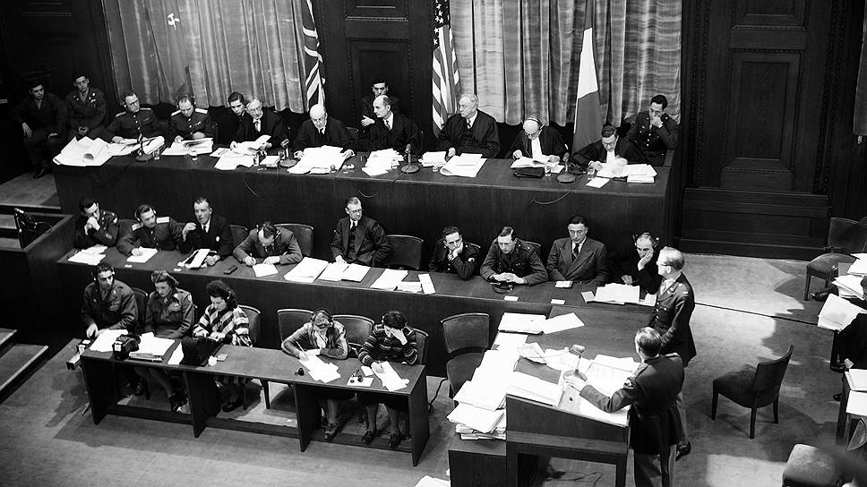
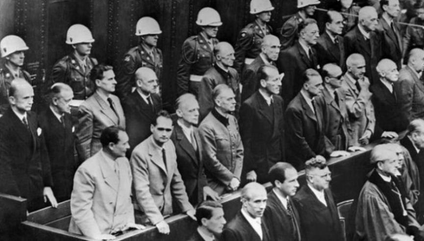
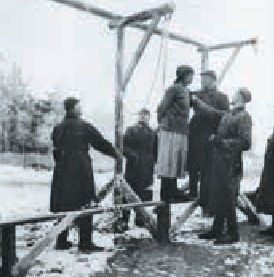

Судебные процессы в отношении нацистских преступников и их пособников
Завершение Второй мировой войны
8(9) мая 1945 года с подписанием Акта о безоговорочной капитуляции Германии в Европе завершилась Вторая мировая война — самая масштабная и кровопролитная в истории человечества.
Самым страшным итогом этой войны стали людские потери и гигантские разрушения.
Война обратила в развалины города и сёла, привела к гибели многих миллионов людей.
Самые большие людские потери — 26,6 млн человек — понёс Советский Союз.
Именно на оккупированных территориях Советского Союза полиция, войска карательных отрядов СС и солдаты вооружённых сил нацистской Германии проявили невиданную жестокость, которую британский премьер-министр Уинстон Черчилль оценил как «преступление, которому ещё не придумано название».
После Победы над фашистской Германией правительства СССР, США, Великобритании и Франции 8 августа 1945 года заключили Лондонское соглашение о проведении суда над главными военными преступниками, которые были инициаторами и исполнителями массового террора и убийств, страшных разрушений и разграбления огромных территорий.
Нюрнбергский процесс над главными немецкими военными преступниками (20 ноября 1945 г. — 1 октября 1946 г.) осуществлял Международный военный трибунал, к которому присоединились 19 других стран — членов антигитлеровской коалиции
В ходе процесса Международный военный трибунал рассмотрел свыше 300 тыс. письменных показаний и около 3 тыс. документов, включая фото и кинообвинения.
В ходе Нюрнбергского процесса использовались документальные данные о злодеяниях нацистских преступников и материальном ущербе, которые собрала Чрезвычайная государственная комиссия, созданная 2 ноября 1942 года в СССР.
Перед судом предстали 22 военных преступника, входивших в выс=шее военно-политическое руководство Третьего рейха.
Трибунал признал действия нацистов преступлением против человечества и приговорил 12 человек к смертной казни через повешение, трёх — к пожизненному тюремному заключению, четырёх — к разным срокам заключения (от 10 до 20 лет).
Преступными организациями были признаны СС, СД, гестапо, а также руководящий состав нацистской партии.
Международный суд отметил опасность возрождения фашизма в любой форме, признал лживость версии о «превентивном» характере нападения Германии на СССР.
Нюрнбергский процесс положил начало международному правосудию в области преступлений против человечества.
Впервые в истории агрессия была признана тягчайшим международным преступлением.
 Нюрнбергский процесс. Судебная коллегия. Сентябрь 1946 г.  Нюрнбергский процесс. Оглашение приговора военным преступникам. Сентябрь 1946 г.Первый судебный процесс по делу о преступлениях, совершённых немецко-фашистскими захватчиками на территории Беларуси, состоялся 15–29 января 1946 года в Минске.
Были осуждены 18 военнослужащих и сотрудников карательных органов нацистской Германии.
Суд в Минске по делу о злодеяниях гитлеровских захватчиков во время оккупации Беларуси положил начало судебной практике по применению уголовного законодательства к лицам, виновным в преступлениях против человечества.
Открытые судебные процессы состоялись также в Бобруйске, Витебске и Гомеле.
Судебная практика по делам о преступлениях на оккупированной территории, будучи основанной на советском законодательстве, международных актах и соглашениях, обеспечила наказание лиц, виновных в совершении конкретных военных преступлений.
 Каратели вешают советскую патриотку. Витебская область